From Claude Shannon’s 1948 noisy telegraph wire to next-token prediction in modern Large Language Models: an exhaustive, mathematically rigorous, and visually illustrated interactive explainer.
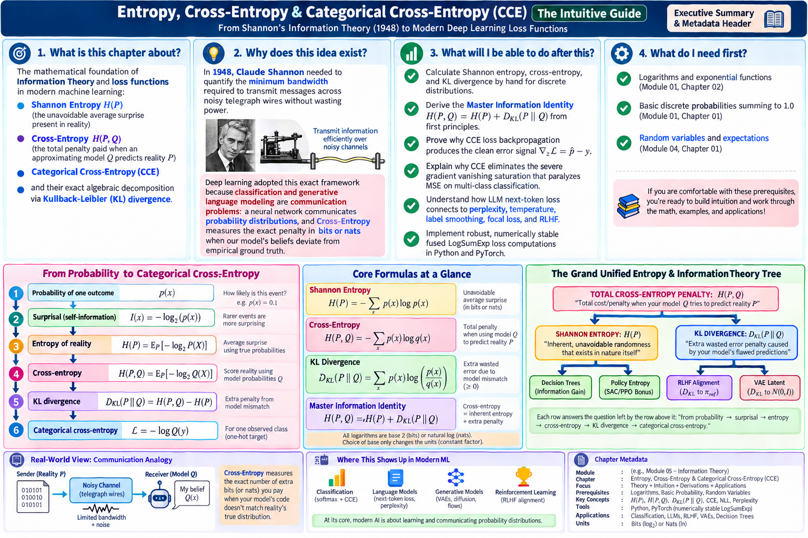
Each row in the diagram above answers the question left open by the row directly above it:
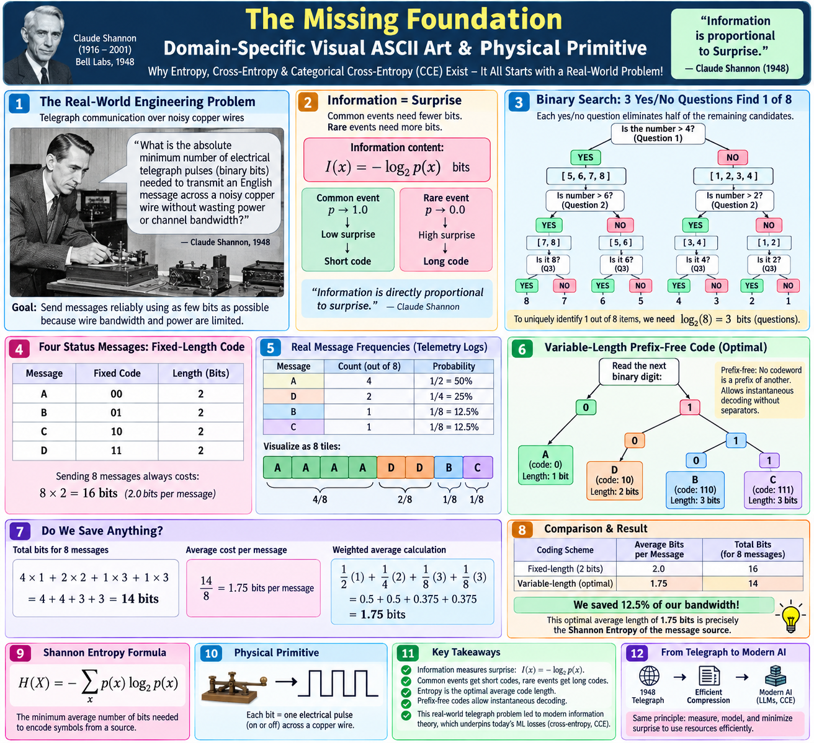
In 1948, Bell Labs mathematician Claude Shannon faced a fundamental engineering dilemma: "What is the absolute minimum number of electrical telegraph pulses (or binary bits) needed to transmit an English message across a noisy copper wire without wasting power or channel bandwidth?"
If a telegraph operator sends the word "THE" (which appears in roughly 7% of all English text), sending 50 electrical pulses is an enormous waste of copper wire bandwidth. But if an extremely rare word like "ZEBRA" arrives, it deserves a longer code because it occurs infrequently.
Shannon discovered that Information is directly proportional to Surprise:
Imagine a server backend that sends four types of status messages: A, B, C, and D. A naive fixed binary code allocates 2 bits for every message:
| Message | Fixed Binary Code | Code Length | Empirical Telemetry Frequency |
|---|---|---|---|
| Message A | 00 | 2 bits | 50.0% ($p = 1/2$) |
| Message D | 11 | 2 bits | 25.0% ($p = 1/4$) |
| Message B | 01 | 2 bits | 12.5% ($p = 1/8$) |
| Message C | 10 | 2 bits | 12.5% ($p = 1/8$) |
Under the fixed naive code, sending 8 messages costs $8 \times 2 = \mathbf{16\text{ bits}}$ (an average of $2.0\text{ bits/msg}$).
Now, can we build an optimal prefix-free code tree where no codeword is a prefix of another?
For an 8-message burst with proportions $[4\text{ As}, 2\text{ Ds}, 1\text{ B}, 1\text{ C}]$: $$\underbrace{4 \times 1}_{\text{four As}} + \underbrace{2 \times 2}_{\text{two Ds}} + \underbrace{1 \times 3}_{\text{one B}} + \underbrace{1 \times 3}_{\text{one C}} = 4 + 4 + 3 + 3 = 14\text{ bits}.$$ Dividing by 8 messages gives the average code length: $$\frac{14}{8} = \mathbf{1.75\text{ bits per message}}.$$ Direct weighted average calculation: $$\frac{1}{2}(1) + \frac{1}{4}(2) + \frac{1}{8}(3) + \frac{1}{8}(3) = 0.5 + 0.5 + 0.375 + 0.375 = \mathbf{1.75\text{ bits}}.$$ We have saved 12.5% of network bandwidth! This theoretical lower bound of 1.75 bits is precisely the Shannon Entropy of the distribution.
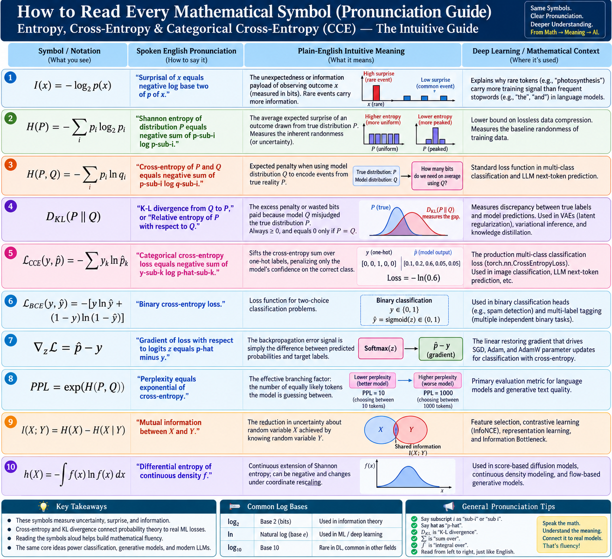
| Symbol / Formula | Spoken English Pronunciation | Plain-English Meaning | Deep Learning & AI Context |
|---|---|---|---|
| $I(x) = -\log_2 p(x)$ | "Surprisal of x equals negative log base two of p of x" | The unexpectedness or information payload of observing outcome $x$. | Quantifies why rare tokens carry much larger gradient signals than frequent stopwords. |
| $H(P) = -\sum_{i} p_i \log_2 p_i$ | "Shannon entropy of distribution P equals negative sum of p-sub-i log p-sub-i" | The average expected surprise of an outcome drawn from reality $P$. | Theoretical lower bound on lossless data compression; baseline uncertainty of data. |
| $H(P, Q) = -\sum_{i} p_i \ln q_i$ | "Cross-entropy of P and Q equals negative sum of p-sub-i log q-sub-i" | Expected penalty when using model $Q$ to encode events from reality $P$. | Standard training loss in multi-class classification and LLM next-token prediction. |
| $D_{\text{KL}}(P \parallel Q)$ | "K-L divergence from Q to P" or "Relative entropy" | Excess penalty or wasted bits paid because model $Q$ misjudged reality $P$. | Measures belief mismatch; RLHF reference leash; VAE latent Gaussian prior penalty. |
| $\mathcal{L}_{\text{CCE}} = -\sum y_k \ln \hat{p}_k$ | "Categorical cross-entropy loss equals negative sum of y-sub-k log p-hat-sub-k" | Sifts cross-entropy sum over one-hot labels, penalizing confidence on the correct class. | PyTorch production loss (torch.nn.CrossEntropyLoss). |
| $\nabla_z \mathcal{L} = \hat{p} - y$ | "Gradient of loss with respect to logits z equals p-hat minus y" | The backpropagation error vector is simply predicted probability minus target label. | The linear restoring gradient driving Adam, AdamW, and SGD parameter updates. |
| $\text{PPL} = \exp(H(P, Q))$ | "Perplexity equals exponential of cross-entropy" | Effective branching factor: number of equally likely tokens the model is guessing between. | Primary benchmark metric for LLMs (GPT-4, LLaMA-3) on held-out test corpora. |
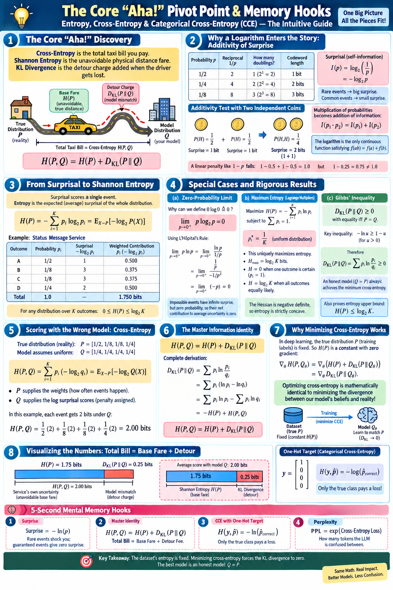
$$H(P, Q) = H(P) + D_{\text{KL}}(P \parallel Q)$$
Because the training dataset distribution $P$ is fixed and immutable, its inherent entropy $H(P)$ is a constant with gradient zero ($\nabla_\theta H(P) = 0$).
Therefore: Minimizing Cross-Entropy $H(P, Q_\theta)$ is mathematically identical to driving the KL Divergence $D_{\text{KL}}(P \parallel Q_\theta)$ to ZERO!
Why must surprisal use a logarithm ($-\log_2 p$) rather than an intuitive linear formula like $1 - p$? Suppose you flip two independent fair coins:
When probabilities multiply, information must add: $$I(p_1 \times p_2) = I(p_1) + I(p_2).$$ The logarithm is the only continuous function satisfying $f(ab) = f(a) + f(b)$. A linear penalty like $1 - p$ completely fails this: for one coin $1 - 0.5 = 0.5$ (sum = $1.0$), but for both coins $1 - 0.25 = 0.75 \ne 1.0$.
When an event is impossible ($p \to 0^+$), its surprisal $-\log_2(p) \to +\infty$, creating an indeterminate form of type $0 \times \infty$. We rewrite this as a fraction: $$\lim_{p \to 0^+} p \ln p = \lim_{p \to 0^+} \frac{\ln p}{1/p}.$$ Since $\ln p \to -\infty$ and $1/p \to +\infty$, this is an indeterminate form of type $\frac{\infty}{\infty}$. Differentiating numerator and denominator: $$\frac{d}{dp}[\ln p] = \frac{1}{p}, \qquad \frac{d}{dp}\left[\frac{1}{p}\right] = -\frac{1}{p^2}.$$ Applying L'Hôpital's Rule: $$\lim_{p \to 0^+} \frac{1/p}{-1/p^2} = \lim_{p \to 0^+} \left(\frac{1}{p} \cdot (-p^2)\right) = \lim_{p \to 0^+} (-p) = \mathbf{0}.$$ Dividing by $\ln 2$ yields the exact result: $$\boxed{\lim_{p \to 0^+} p \log_2 p = 0}.$$ Physical reality: Impossible events carry infinite surprise if they were to occur, but because they never occur, their net contribution to average uncertainty is exactly zero.
We seek to maximize $H(P) = -\sum_{i=1}^K p_i \ln p_i$ subject to the simplex constraint $g(p) = \sum_{i=1}^K p_i - 1 = 0$.
We formulate the Lagrangian with multiplier $\lambda$:
$$\mathcal{L}(p_1, \dots, p_K, \lambda) = -\sum_{i=1}^K p_i \ln p_i + \lambda \left(\sum_{i=1}^K p_i - 1\right).$$
Taking the partial derivative with respect to coordinate $p_i$:
$$\frac{\partial \mathcal{L}}{\partial p_i} = -\left(\ln p_i + p_i \cdot \frac{1}{p_i}\right) + \lambda = -\ln p_i - 1 + \lambda.$$
Setting the derivative to zero:
$$-\ln p_i - 1 + \lambda = 0 \implies \ln p_i = \lambda - 1 \implies p_i = e^{\lambda - 1} = \text{constant } c.$$
Since all $p_i = c$ and $\sum_{i=1}^K p_i = 1$, we have $K \cdot c = 1 \implies c = \frac{1}{K}$. The unique critical point is the uniform distribution:
$$\boxed{p_i^* = \frac{1}{K} \quad \text{for all } i \in \{1, \dots, K\}}.$$
To verify that this critical point is a global maximum, we compute the Hessian matrix:
$$\frac{\partial^2 H}{\partial p_i^2} = -\frac{1}{p_i} < 0, \qquad \frac{\partial^2 H}{\partial p_i \partial p_j} = 0 \quad (i \ne j).$$
The Hessian $\nabla^2 H(P) = -\text{diag}(1/p_1, \dots, 1/p_K)$ is strictly negative definite on the entire probability simplex interior. Therefore, $H(P)$ is strictly concave, and the uniform distribution achieves the absolute maximum entropy:
$$\boxed{H_{\max} = \log_2 K\text{ bits}}.$$
Recall the fundamental tangent inequality for the natural logarithm: for any $u > 0$, $$-\ln u \ge 1 - u,$$ with equality if and only if $u = 1$. Substitute $u = q_i / p_i$ for all $i$ where $p_i > 0$: $$-\ln\left(\frac{q_i}{p_i}\right) \ge 1 - \frac{q_i}{p_i} \iff \ln\left(\frac{p_i}{q_i}\right) \ge 1 - \frac{q_i}{p_i}.$$ Multiply both sides by $p_i > 0$ and sum across all outcomes: $$\sum_{i} p_i \ln\left(\frac{p_i}{q_i}\right) \ge \sum_{i} p_i \left(1 - \frac{q_i}{p_i}\right) = \sum_{i} p_i - \sum_{i} q_i = 1 - 1 = \mathbf{0}.$$ Therefore: $$\boxed{D_{\text{KL}}(P \parallel Q) \ge 0, \quad \text{with } D_{\text{KL}} = 0 \iff P = Q}.$$
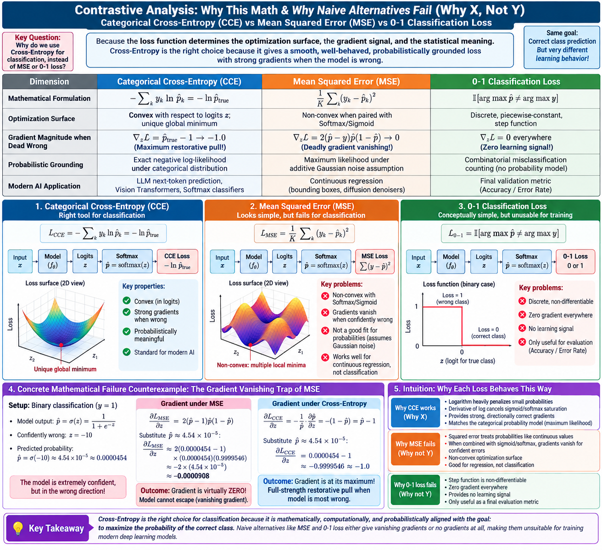
Suppose an image of a Cat has true label $y = 1$. The neural network outputs logit $z = -10.0$.
Passing through Sigmoid gives predicted probability $\hat{p} = \sigma(-10) = \frac{1}{1 + e^{10}} \approx \mathbf{0.0000454}$ (the model is catastrophically confident and completely wrong!).
Loss formulation: $\mathcal{L}_{\text{MSE}} = (1 - \hat{p})^2$. By chain rule:
$$\frac{\partial \mathcal{L}}{\partial z} = \frac{\partial \mathcal{L}}{\partial \hat{p}} \cdot \frac{\partial \hat{p}}{\partial z} = 2(\hat{p} - 1) \cdot \hat{p}(1 - \hat{p})$$Substituting $\hat{p} \approx 0.0000454$:
$$\frac{\partial \mathcal{L}}{\partial z} \approx 2(0.0000454 - 1) \cdot (0.0000454)(0.99995) \approx \mathbf{-0.0000908}$$⚠️ The gradient is virtually ZERO! The sigmoid saturation factor $\hat{p}(1-\hat{p}) \to 0$ extinguishes learning. The network freezes and cannot update its weights.
Loss formulation: $\mathcal{L}_{\text{CCE}} = -\ln \hat{p}$. By chain rule:
$$\frac{\partial \mathcal{L}}{\partial z} = -\frac{1}{\hat{p}} \cdot \frac{\partial \hat{p}}{\partial z} = -\frac{1}{\hat{p}} \cdot \hat{p}(1 - \hat{p}) = \hat{p} - 1$$Substituting $\hat{p} \approx 0.0000454$:
$$\frac{\partial \mathcal{L}}{\partial z} = 0.0000454 - 1 \approx \mathbf{-0.9999546} \approx \mathbf{-1.0}$$✅ The $-\frac{1}{\hat{p}}$ derivative of the log cancels the $\hat{p}$ in the sigmoid derivative! The gradient is at its absolute maximum ($-1.0$), delivering a full corrective kick.
Drag the predicted probability $\hat{p}$ towards 0 (dead wrong) or 1 (correct) to see how the backpropagation gradients respond in real time:
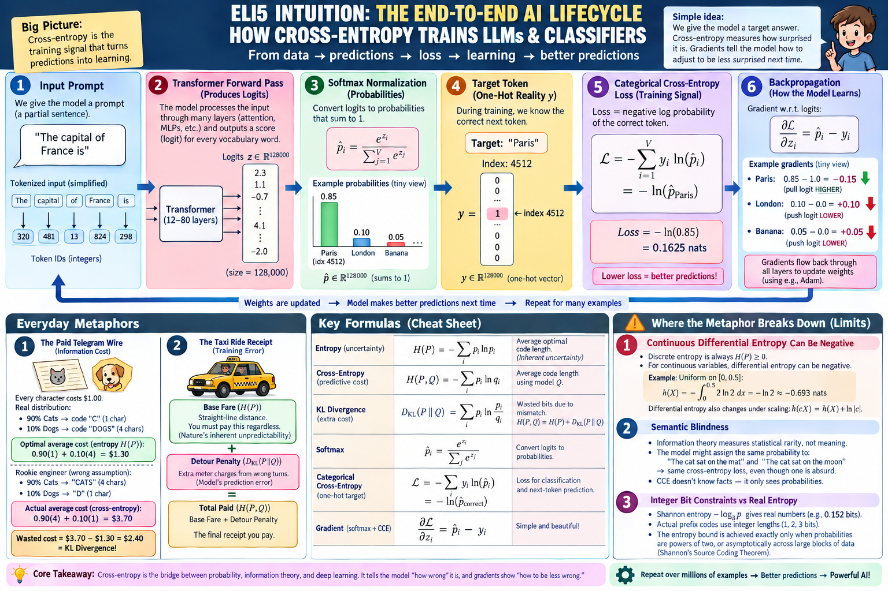
1. Continuous Differential Entropy Paradox: While discrete entropy is always non-negative ($H(P) \ge 0$), continuous differential entropy $h(X) = -\int f(x)\ln f(x)\,dx$ can be negative! For example, a uniform distribution on $[0, 0.5]$ has density $f(x) = 2$ and entropy $h(X) = -\ln 2 \approx -0.693\text{ nats}$.
2. Semantic Blindness: Shannon entropy measures statistical rarity, not factual truth. Predicting "The cat sat on the mat" versus "The cat sat on the moon" yields identical cross-entropy if both words have equal logit probability.
3. Non-Integer Bits: Ideal entropy $-\log_2 p$ yields continuous numbers (e.g., 1.75 bits), while physical pulses must be discrete integers ($1, 2, 3$).
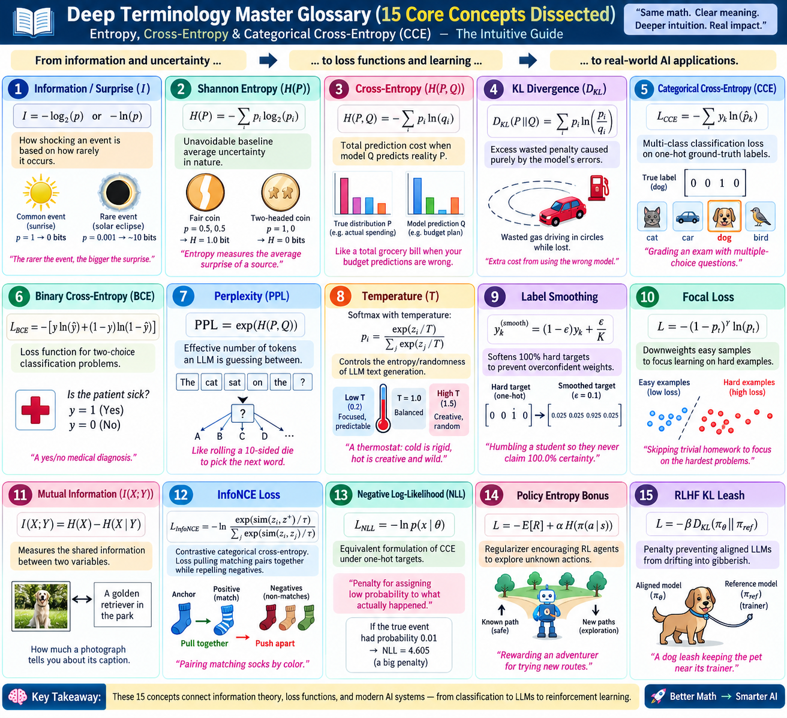
| Term / Concept | Mathematical Formulation | Intuitive Explanation | Architectural AI Role |
|---|---|---|---|
| Surprisal ($I$) | $-\log_2 p(x)$ | The shock value of an event. Rare events carry massive surprise. | Loss weighting in token prediction. |
| Shannon Entropy ($H$) | $-\sum p_i \log_2 p_i$ | Unavoidable baseline average uncertainty of a system. | Theoretical data compression limit. |
| Cross-Entropy ($H(P, Q)$) | $-\sum p_i \ln q_i$ | Total cost when using model $Q$ to approximate reality $P$. | Universal deep learning training loss. |
| KL Divergence ($D_{\text{KL}}$) | $\sum p_i \ln(p_i / q_i)$ | Extra wasted penalty caused by model errors. Always $\ge 0$. | RLHF reference policy leash; VAE prior. |
| Categorical Cross-Entropy | $-\sum y_k \ln \hat{p}_k$ | Cross-entropy evaluated over one-hot ground-truth vectors. | Multi-class classification loss. |
| Logits ($z$) | $z = Wx + b \in \mathbb{R}^K$ | Raw, unbounded real-valued scores output by final linear layer. | Inputs to Softmax layer. |
| Softmax ($\hat{p}$) | $e^{z_k} / \sum e^{z_r}$ | Normalizes logits into positive probabilities summing to 1. | Probability generation head. |
| Perplexity (PPL) | $\exp(\mathcal{L}_{\text{CCE}})$ | Effective branching factor (how many tokens LLM is guessing between). | Evaluation metric for language models. |
| Temperature ($T$) | $\text{Softmax}(z / T)$ | Controls entropy of sampling: cold is rigid, hot is wild. | Inference-time sampling randomness. |
| Label Smoothing | $(1-\epsilon)y_k + \frac{\epsilon}{K}$ | Mixes hard one-hot targets with uniform distribution to avoid overconfidence. | Regularization in Vision Transformers. |
| Focal Loss | $-(1-p_t)^\gamma \ln p_t$ | Downweights easy samples to focus learning on hard edge cases. | Dense object detection (RetinaNet). |
| Negative Log-Likelihood (NLL) | $-\ln p(x \mid \theta)$ | Penalty for assigning low probability to true observed data. | Equivalent to CCE with one-hot targets. |
| Policy Entropy Bonus | $+\alpha H(\pi(a \mid s))$ | Reward added to encourage reinforcement learning agents to explore. | Prevents premature collapse in PPO/SAC. |
| Fused LogSumExp | $m + \ln\sum e^{z_r - m}$ | Numerically stable log-sum-exp trick subtracting $\max(z)$. | Eliminates FP16 underflow/overflow in GPUs. |
| SRAM Streaming | FlashCrossEntropy | Computes loss in on-chip SRAM without writing 4GB logits to HBM. | Enables training LLMs with 128k vocabulary. |
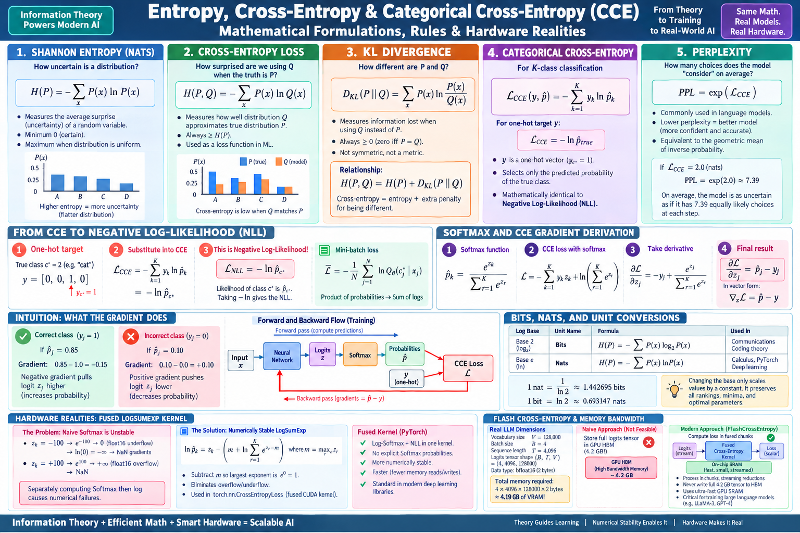
The network produces logits $z = [z_1, \dots, z_K]^\top$. Softmax probabilities are $\hat{p}_k = \frac{e^{z_k}}{\sum_{r} e^{z_r}}$.
Substituting Softmax directly into CCE loss:
$$\begin{aligned}
\mathcal{L} &= -\sum_{k=1}^K y_k \ln\left(\frac{e^{z_k}}{\sum_r e^{z_r}}\right) = -\sum_{k=1}^K y_k \left(z_k - \ln\sum_r e^{z_r}\right) \\
&= -\sum_{k=1}^K y_k z_k + \left(\sum_{k=1}^K y_k\right) \ln\sum_{r=1}^K e^{z_r} = -\sum_{k=1}^K y_k z_k + \ln\sum_{r=1}^K e^{z_r}.
\end{aligned}$$
Now differentiate with respect to logit $z_j$:
$$\frac{\partial \mathcal{L}}{\partial z_j} = -y_j + \frac{1}{\sum_r e^{z_r}} \cdot \frac{\partial}{\partial z_j}\left(\sum_r e^{z_r}\right) = -y_j + \frac{e^{z_j}}{\sum_r e^{z_r}} = \mathbf{\hat{p}_j - y_j}.$$
In vector notation:
$$\boxed{\nabla_z \mathcal{L} = \hat{p} - y}.$$
The gradient is simply: Predicted Probability minus Ground Truth!
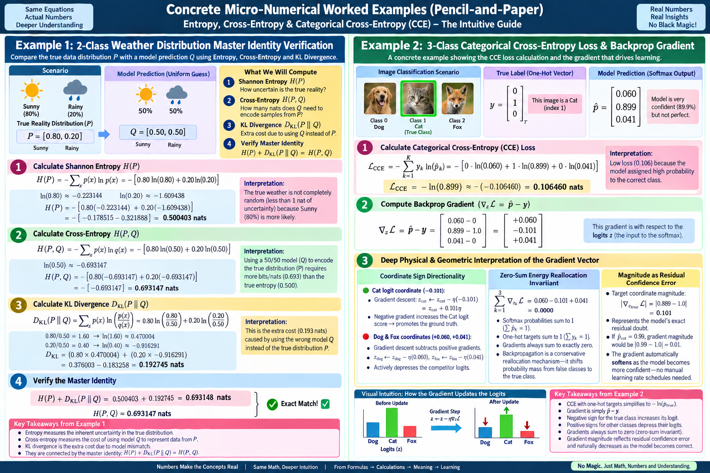
Let True Reality $P = [0.80, 0.20]$ (Sunny vs Rainy) and Model Prediction $Q = [0.50, 0.50]$.
$$D_{\text{KL}}(P \parallel Q) = 0.80 \ln\left(\frac{0.80}{0.50}\right) + 0.20 \ln\left(\frac{0.20}{0.50}\right) = 0.80(0.470004) + 0.20(-0.916291) = \mathbf{0.192745\text{ nats}}.$$ Summing entropy and divergence: $$H(P) + D_{\text{KL}}(P \parallel Q) = 0.500403 + 0.192745 = \mathbf{0.693148\text{ nats}} \equiv H(P, Q) \quad \text{✅ Exact Match!}$$
Suppose an image classifier evaluates a Cat (Index 1).
True one-hot target: $y = [0, 1, 0]^\top$ (Dog, Cat, Fox).
Model Softmax output: $\hat{p} = [0.060, 0.899, 0.041]^\top$.
Click and drag the canvas to rotate the 3-class simplex ($p_1 + p_2 + p_3 = 1$). Notice how the concave entropy surface rises to its global maximum at the center $(1/3, 1/3, 1/3)$ with $H = \log_2 3 \approx 1.585\text{ bits}$, dropping to zero at each apex!
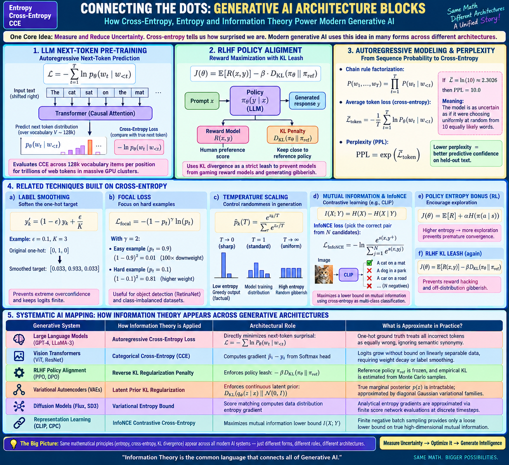
1. Physical Constraint: Copper wire bandwidth is limited $\to$ Must compress symbols.
2. Surprisal Metric: Rare symbols require more bits $\to$ Quantified by $-\log_2 p_i$.
3. Shannon Entropy: Expected length under optimal coding $\to$ Absolute baseline $H(P)$.
4. Cross-Entropy: When sender uses model $Q$ instead of reality $P$ $\to$ Length becomes $H(P, Q)$.
5. KL Divergence: The strictly positive waste tax $\to$ $D_{\text{KL}}(P \parallel Q) = H(P, Q) - H(P) \ge 0$.
6. Softmax Transformation: Neural nets output unconstrained logits $z \in \mathbb{R}^K$ $\to$ Must normalize to valid distribution $\hat{p}$.
7. CCE Loss & Gradient: Minimizing divergence yields $\mathcal{L} = -\sum y_k \ln \hat{p}_k$ whose gradient $\hat{p} - y$ avoids sigmoid saturation.
8. LLM Next-Token Prediction: Predicting next token across 128,000 vocabulary words is repeated CCE at every position!
9. Perplexity: Model uncertainty across sequences is measured by $\text{PPL} = \exp(\overline{\mathcal{L}}_{\text{token}})$.
10. Control & Alignment: Sampling is sharpened via Temperature ($z/T$) and fine-tuned via RLHF / DPO policy leashes ($-\beta D_{\text{KL}}$).
Adjust the sampling temperature $T$ to observe how logits $z = [3.2, 2.1, 1.4, 0.2]$ transform from deterministic argmax ($T \to 0$) to uniform gibberish ($T \to \infty$):
| Generative System | Information Theory Application | Architectural Mechanism | Practical Approximation |
|---|---|---|---|
| LLMs (GPT-4, Claude, LLaMA) | Autoregressive Next-Token CCE | Minimizes surprisal $-\sum \ln P_\theta(w_t \mid w_{<t})$ across 128k vocabulary | One-hot target ignores semantic synonyms. |
| Vision Transformers (ViT) | Categorical Cross-Entropy | Backpropagates $\hat{p}_i - y_i$ through self-attention layers | Unbounded logits require label smoothing. |
| RLHF / DPO Alignment | Reverse KL Regularization Penalty | Enforces policy leash: $-\beta D_{\text{KL}}(\pi_\theta \parallel \pi_{\text{ref}})$ | Empirical KL estimated via Monte Carlo token samples. |
| Variational Autoencoders (VAEs) | Latent Gaussian Prior KL | $D_{\text{KL}}(q_\phi(z \mid x) \parallel \mathcal{N}(0, I))$ | Intractable posterior approximated by diagonal Gaussian. |
| Representation (CLIP, InfoNCE) | Contrastive Cross-Entropy | Maximizes mutual information lower bound $I(X; Y)$ | Finite negative batch bounds true mutual information. |
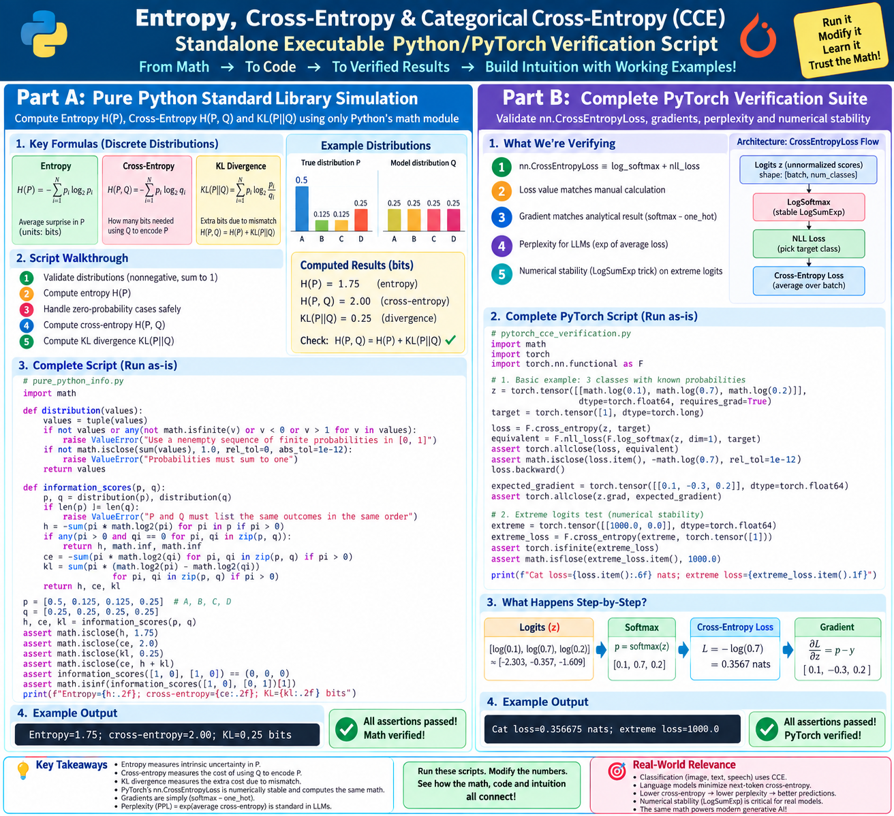
import math
def distribution(values):
values = tuple(values)
if not values or any(not math.isfinite(v) or v < 0 or v > 1 for v in values):
raise ValueError("Use a nonempty sequence of finite probabilities in [0, 1]")
if not math.isclose(sum(values), 1.0, rel_tol=0, abs_tol=1e-12):
raise ValueError("Probabilities must sum to one")
return values
def information_scores(p, q):
p, q = distribution(p), distribution(q)
if len(p) != len(q):
raise ValueError("P and Q must list the same outcomes in the same order")
h = -sum(pi * math.log2(pi) for pi in p if pi > 0)
if any(pi > 0 and qi == 0 for pi, qi in zip(p, q)):
return h, math.inf, math.inf
ce = -sum(pi * math.log2(qi) for pi, qi in zip(p, q) if pi > 0)
kl = sum(pi * (math.log2(pi) - math.log2(qi)) for pi, qi in zip(p, q) if pi > 0)
return h, ce, kl
# Test on 4 Status Messages:
p = [0.5, 0.125, 0.125, 0.25] # A, B, C, D
q = [0.25, 0.25, 0.25, 0.25]
h, ce, kl = information_scores(p, q)
assert math.isclose(h, 1.75)
assert math.isclose(ce, 2.0)
assert math.isclose(kl, 0.25)
assert math.isclose(ce, h + kl)
print(f"Entropy={h:.2f} bits | Cross-Entropy={ce:.2f} bits | KL={kl:.2f} bits")
import math
import torch
import torch.nn.functional as F
# 1. Verification of Softmax + CCE Gradient:
z = torch.tensor([[math.log(0.1), math.log(0.7), math.log(0.2)]],
dtype=torch.float64, requires_grad=True)
target = torch.tensor([1], dtype=torch.long) # True class is Index 1 (Cat)
loss = F.cross_entropy(z, target)
equivalent = F.nll_loss(F.log_softmax(z, dim=1), target)
assert torch.allclose(loss, equivalent)
assert math.isclose(loss.item(), -math.log(0.7), rel_tol=1e-12)
loss.backward()
# Expected analytical gradient: p_hat - y = [0.1 - 0, 0.7 - 1.0, 0.2 - 0] = [0.1, -0.3, 0.2]
expected_gradient = torch.tensor([[0.1, -0.3, 0.2]], dtype=torch.float64)
assert torch.allclose(z.grad, expected_gradient)
# 2. Extreme Stability Edge Case (No Overflow):
extreme = torch.tensor([[1000.0, 0.0]], dtype=torch.float64)
extreme_loss = F.cross_entropy(extreme, torch.tensor([1]))
assert torch.isfinite(extreme_loss)
assert math.isclose(extreme_loss.item(), 1000.0)
print(f"PyTorch CCE Loss={loss.item():.6f} nats | Extreme Stable Loss={extreme_loss.item():.1f}")
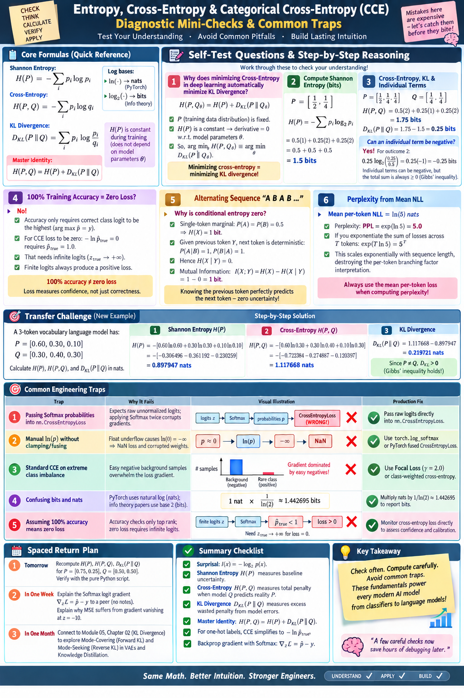
| Production Trap | Root Cause of Failure | Production Fix |
|---|---|---|
Passing Softmax probabilities into nn.CrossEntropyLoss |
nn.CrossEntropyLoss expects raw logits; applying Softmax twice corrupts gradients. |
Pass raw logits directly into nn.CrossEntropyLoss. |
| Manual $\ln(p)$ without clamping | Float underflow evaluates $e^{-100} \to 0 \implies \ln(0) = -\infty \implies \text{NaN}$. | Use torch.log_softmax or fused CrossEntropyLoss. |
| Applying standard CCE to extreme class imbalance | Easy negative background samples overwhelm the loss gradient. | Use Focal Loss ($\gamma = 2.0$) or class-weighted CCE. |
| Confusing bits and nats | PyTorch uses natural log $\ln$ (nats); paper reports base 2 (bits). | Multiply nats by $1/\ln(2) \approx 1.442695$ to report bits. |
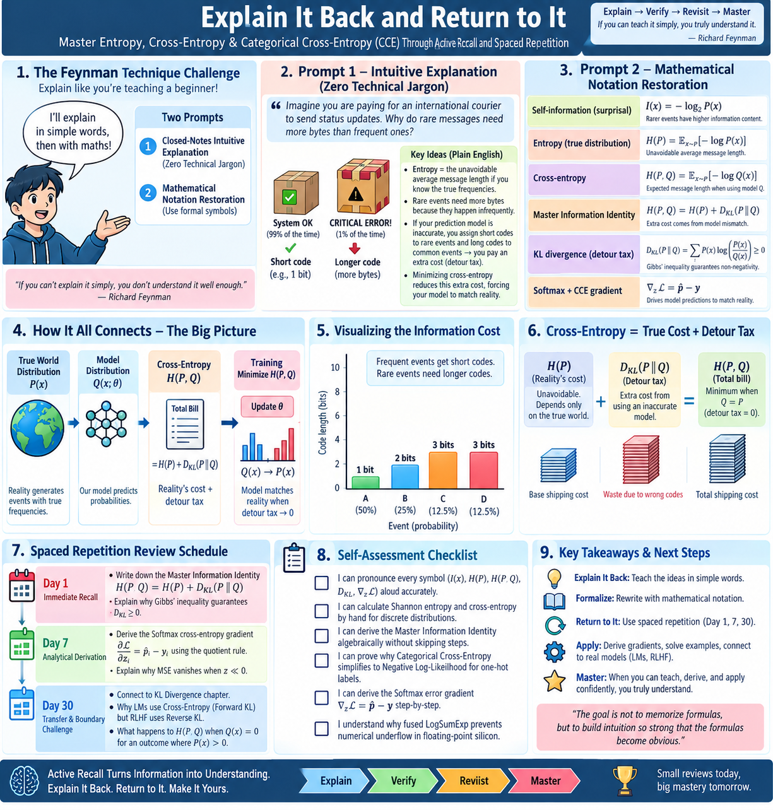
Explain to a junior engineer why rare events require longer codewords, why cross-entropy is like a taxi receipt, why MSE freezes learning when dead wrong, and why minimizing cross-entropy forces model beliefs to mirror reality.
| Resource and Author | Learning Job | Exact Starting Point | Readiness Level | Access | Status |
|---|---|---|---|---|---|
| 3Blue1Brown: A Short Introduction to Entropy (Grant Sanderson) | Geometric animation of codebooks, probability partitioning, and average surprise | Full 20-minute video | Zero prerequisites beyond arithmetic | Free YouTube | Verified Sep 2026 |
| Visual Information Theory (Christopher Olah) | Intuitive 2D area visualizer of entropy, codeword spaces, and cross-entropy | Section: "Entropy" and "Cross-Entropy" | Probabilities summing to 1.0 | Free Open Web | Verified Sep 2026 |
| Seeing Theory: Probability & Information (Brown University) | Interactive web sliders adjusting outcome probabilities and observing entropy shifts | Chapter 3: Probability Distributions | Beginner browser interactive | Free Educational | Verified Sep 2026 |
| A Mathematical Theory of Communication (Claude Shannon, 1948) | Historical seminal paper establishing information theory and logarithmic surprise | Part I: Discrete Systems, §1–§3 (pp. 379–393) | Logarithms & probability | Free Archive PDF | Bell Labs Classic |
| Elements of Information Theory (2nd Ed) (Cover & Thomas) | Definitive graduate textbook for formal mathematical proofs and Jensen bounds | Chapter 2: Entropy & Relative Entropy (pp. 13–24) | Calculus & probability | Academic Textbook | Graduate Standard |
| PyTorch: torch.nn.CrossEntropyLoss (PyTorch Team) | Official software documentation for fused LogSoftmax + NLLLoss implementation | API formulas, reduction, label smoothing | PyTorch tensors | Free Official Docs | Verified Sep 2026 |